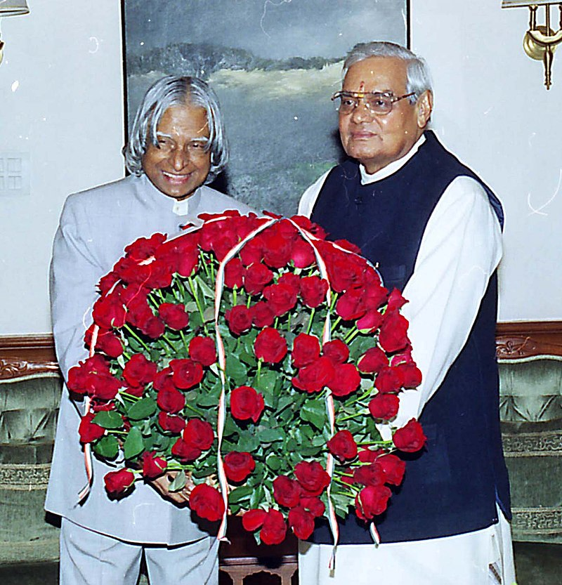
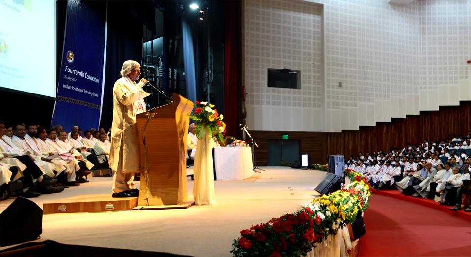

Avul Pakir Jainulabdeen Abdul Kalam (/ˈəbdʊl kəˈlɑːm/ ⓘ; 15 October 1931 – 27 July 2015) was an Indian aerospace scientist and statesman who served as the president of India from 2002 to 2007.Born and raised in a Muslim family in Rameswaram, Tamil Nadu, Kalam studied physics and aerospace engineering. He spent the next four decades as a scientist and science administrator, mainly at the Defence Research and Development Organisation (DRDO) and Indian Space Research Organisation (ISRO) and was intimately involved in India's civilian space programme and military missile development efforts. He was known as the "Missile Man of India" for his work on the development of ballistic missile and launch vehicle technology. He also played a pivotal organisational, technical, and political role in Pokhran-II nuclear tests in 1998, India's second such test after the first test in 1974.
Avul Pakir Jainulabdeen Abdul Kalam was born on 15 October 1931, to a Tamil Muslim family in the pilgrimage centre of Rameswaram on Pamban Island, Madras Presidency (now in the Indian state of Tamil Nadu).[2][3] His father Jainulabdeen Marakayar was a boat owner and imam of a local mosque,[4] and his mother Ashiamma was a housewife.[5][6] His father owned a boat that ferried Hindu pilgrims between Rameswaram and Dhanushkodi.[7][8]
Chapter 2
On 10 June 2002, the National Democratic Alliance which was in power at the time, expressed its intention to nominate Kalam for the post of the President of India.[40][41] His candidature was backed by the opposition parties including the Samajwadi Party and the Nationalist Congress Party.[42][43] After the support for Kalam, incumbent president K. R. Narayanan chose not to seek a re-election.[44] Kalam said of the announcement of his candidature:
I am really overwhelmed. Everywhere both in Internet and in other media, I have been asked for a message. I was thinking what message I can give to the people of the country at this juncture.[45]

Chapter 3
During his term as president, he was affectionately known as the "People's President".[52][53][54][55] He later stated that signing the Office of profit bill was the toughest decision he had taken during his tenure.[56][57][58] In September 2003, during an interactive session at PGIMR in Chandigarh, Kalam asserted the need of Uniform Civil Code in India, keeping in view the population of the country.[59][60] He also took a decision to impose President's rule in Bihar in 2005.[61] However, during his tenure as president, he made no decision on 20 out of the 21 mercy petitions submitted to him to commute death penalties, including that of terrorist Afzal Guru, who was convicted of conspiracy in the December 2001 attack on the Indian Parliament and was sentenced to death by the Supreme Court of India in 2004.[62] He acted only on a single plea, rejecting that of Dhananjoy Chatterjee, who was later hanged.[63]
Chapter 4
After leaving office, Kalam returned to teaching, and became a visiting professor at various institutions. He became a visiting professor at IIM Shillong,[79] an honorary professor at his alma mater Anna University in Chennai,[80] and an honorary fellow of the Indian Institute of Science at Bengaluru.[81][82] In September 2007, he became the first chancellor of the newly established Indian Institute of Space Science and Technology at Thiruvananthapuram.[83] He also conducted lectures for management students in India,[84] and visited China twice at the invitation of the Chinese government to conduct sessions at the Peking University.[85]]

Chapter 5
After graduating from the Madras Institute of Technology in 1960, Kalam became a member of the Defence Research & Development Service and joined the Aeronautical Development Establishment of the Defence Research and Development Organisation (DRDO) as a scientist. During his early career, he was involved in the design of small hovercraft, and remained unconvinced by his choice of a job at DRDO.[19] Later, he joined the Indian National Committee for Space Research, working under renowned space scientist Vikram Sarabhai.[3] He was interviewed and recruited into Indian Space Research Organisation (ISRO) by H. G. S. Murthy, the first director of the Thumba Equatorial Rocket Launching Station.[20]

.jpg)